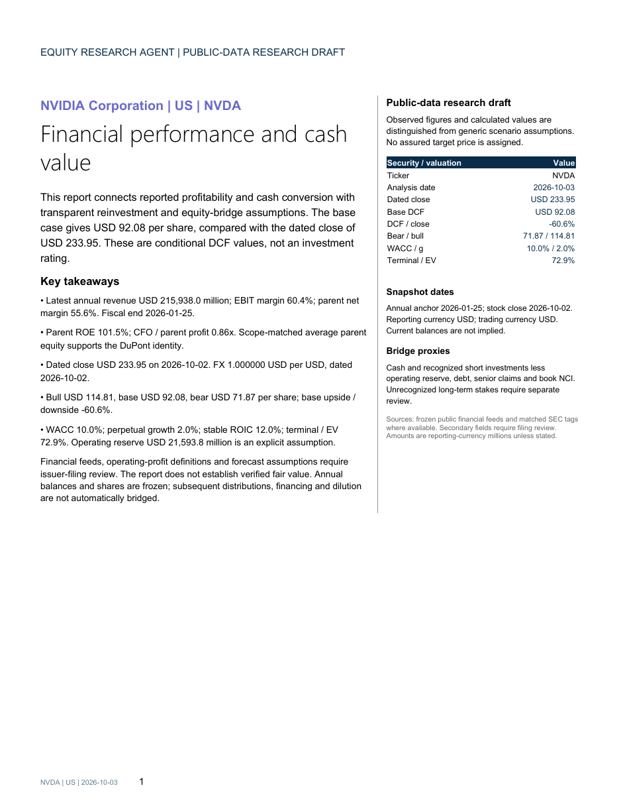

Start with the facts
Choose an exact security. Load dated financial observations and a stock close. Preserve currencies, fiscal periods and source references.
Dated evidenceOPEN PROJECT SHOWCASE · V2
From financial facts to explicit assumptions.
From assumptions to an editable research report.
A local equity research workspace for US, Shanghai and Hong Kong stocks. Explore the actual outputs, the calculation detail and the reasoning behind the numbers.

01 / THE OUTPUTS
These are complete reports, not mockups.
Switch markets, inspect the valuation and download
the editable document or its matching PDF.
Conditional scenario values under disclosed assumptions. These are not investment ratings or assured target prices.
View checks & file hashes →02 / THE WORKFLOW
Computation, research and report layout are separate.
Every suggestion remains a proposal until you apply it.
Choose an exact security. Load dated financial observations and a stock close. Preserve currencies, fiscal periods and source references.
Dated evidenceSet inputs yourself or challenge your thesis with DeepSeek. Review suggested ranges, sources and counterarguments before applying selected values.
User-controlled judgmentThe local engine computes FCFF, terminal reinvestment, the equity bridge and sensitivity. The model does not invent the valuation arithmetic.
Deterministic calculationsKeep numerical Key Takeaways, then explain the mechanisms. Export Word and PDF with calculation details, assumptions and evidence.
Reviewable outputs03 / THE EVIDENCE
Readable pages matter. So do matched currencies, reproducible calculations and honest limits.
Inspect the release validation →All 39 pages across the three frozen reports were visually checked. The DCF visualization, assumptions sidebar and landscape calculation tables are included.
Each report passed 19 automatic checks covering financial recalculation, DuPont identity, currency conversion, chart values, Word/PDF consistency and provenance hashes.
Secondary feeds are not independently filing-verified. Annual balances can lag the stock price. Generic forecasts, terminal inputs and bridge policies require company-specific review.
The repository excludes API keys, personal discussion histories, private reference reports and unrelated backtests. The public renderer uses its own code-defined layout.
EXPLORE HERE. GENERATE LOCALLY.
GitHub Pages serves these frozen outputs. Run the Python workspace locally to generate reports or discuss assumptions with your own configured provider.
python -m venv .venv
.venv/Scripts/python.exe -m pip install -e ".[test]"
.venv/Scripts/python.exe -m equity_research_agent.cli serveWindows quick start from the repository directory. PDF export needs Windows, Microsoft Word and Poppler. Other systems can generate Word using --skip-pdf.
中文操作指南 ↗GitHub 上传与 Pages 指南 ↗